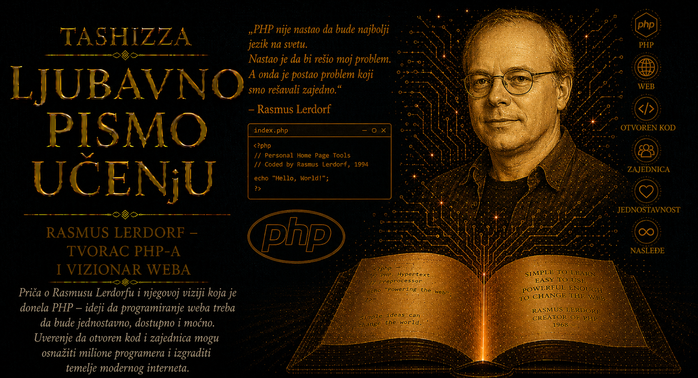

Ljubavno pismo učenju

Rasmus Lerdorf pripada retkoj vrsti stvaralaca čije je delo postalo mnogo veće od prvobitne namere, dok je njegov autor ostao spreman da o njemu govori bez monumentalnosti. PHP nije započeo kao projekat čoveka koji želi da stvori novi programski jezik i promeni Veb. Nastao je iz želje da Lerdorf prati posete svojoj stranici i prestane da ponavlja poslove koje je računar mogao obaviti umesto njega. U toj skromnoj početnoj potrebi prepoznaje se osobina koja će obeležiti čitavu njegovu karijeru: poštovanje praktičnog problema i odbojnost prema nepotrebnoj složenosti.
Rođen je 22. novembra 1968. godine u Qeqertarsuaqu, nekadašnjem Godhavnu, na grenlandskom ostrvu Disko. Detinjstvo i mladost povezali su Grenland, Dansku i Kanadu, različite jezike, klime i kulturne sredine. Porodica se početkom osamdesetih preselila u Kanadu, gde je završio školovanje i studirao sistemski dizajn na Univerzitetu Waterloo. Takav životni put rano ga je navikao na prilagođavanje i na razumevanje da isti problem može imati više prihvatljivih rešenja, u zavisnosti od sredine, ljudi i sredstava koja su dostupna.
Studije sistemskog dizajna odgovarale su njegovom temperamentu, jer su ga usmeravale prema celini sastavljenoj od ljudi, procesa, podataka i tehničkih ograničenja. Lerdorfa nisu privlačile apstrakcije odvojene od upotrebe. Program je za njega imao vrednost kada nekome skraćuje posao, uklanja ponavljanje ili omogućava da zamisao brže dobije radni oblik. Takav pristup objašnjava zašto je PHP dugo rastao prema potrebama stvarnih web stranica, čak i kada su njegove pojedinosti delovale neuredno ljudima koji programske jezike procenjuju pre svega prema unutrašnjoj simetriji.
Lerdorf je umeo da sopstvenu ulogu opisuje sa suvim humorom. Umesto slike usamljenog genija koji je unapred video budućnost, nudio je priču o čoveku koji je napravio nekoliko alata, pokazao ih drugima i zatim posmatrao kako ih zajednica pretvara u nešto neuporedivo veće. Ta sposobnost da se povuče pred stvarnim tokom događaja predstavljala je važan deo njegovog doprinosa. Kada su Zeev Suraski i Andi Gutmans ponudili novo jezgro, prihvatio je pravac koji je projektu omogućavao da raste, iako se time udaljavao od njegove prvobitne implementacije.
Njegova skromnost nije podrazumevala odsustvo jasnog stava. Lerdorf je otvoreno branio pragmatično programiranje, neposredne rezultate i potrebu da se performanse posmatraju na stvarnim sistemima. Bio je skeptičan prema slojevima apstrakcije uvedenim bez vidljive koristi i prema tehnologijama čija veličina raste brže od problema koji rešavaju. U javnim nastupima često je pokazivao merenja, konkretne primere i posledice pojedinih odluka, vraćajući raspravu sa prestiža modernih izraza na pitanje koliko brzo, pouzdano i razumljivo sistem služi korisniku.
Takav temperament povremeno ga je dovodio u neobičan položaj. Bio je tvorac jezika čije su nedoslednosti programeri često kritikovali, a istovremeno jedan od ljudi najspremnijih da prizna istorijske razloge tih slabosti. PHP nije skrivao tragove svog odrastanja: funkcije nastale u različitim razdobljima, pravila oblikovana potrebom da stari sajtovi nastave da rade i odluke donesene pre nego što je projekat dobio savremeni razvojni proces. Lerdorfova otvorenost prema toj nesavršenosti pružala je dragocenu lekciju o stvaranju: veliko delo može imati ožiljke, a pošten odnos prema njima vredniji je od naknadno izgrađenog mita o savršenom početku.
Tokom karijere radio je u kompanijama koje su oblikovale različite faze Veba, među kojima su Yahoo! i Etsy, a njegovo iskustvo bilo je posebno dragoceno na mestima gde se ogroman broj zahteva susretao sa stvarnim ograničenjima servera. I kada je PHP postao globalna tehnologija, ostao je blizak radu na performansama, infrastrukturi i pronalaženju uskih grla. Njegov autoritet proisticao je iz sposobnosti da razume šta se događa ispod vidljive stranice, u trenutku kada zahtev prolazi kroz server, jezik, program i bazu podataka.
Lerdorfova priča nosi i važnu pouku o autorstvu. Projekat koji postane deo svetske infrastrukture više ne može ostati produžetak volje jednog čoveka. Potrebni su novi održavaoci, drugačije ideje, pravila donošenja odluka i spremnost da se pojedini delovi iznova napišu. Lerdorf je zadržao mesto začetnika, ali nije zahtevao da zauvek bude jedini upravljač. Takva mera između ličnog ponosa i poverenja u zajednicu omogućila je PHP-u da preživi promene tehnologije, generacija i načina na koji se Veb gradi.
Milioni programera upoznali su serversko programiranje kroz svoj prvi PHP dokument. Često nisu znali ništa o Lerdorfovoj biografiji, ranim CGI alatima ni raspravama o dizajnu jezika. Videli su da nekoliko redova koda može prikazati datum, prihvatiti obrazac ili sačuvati podatak, i u tom trenutku osetili da i oni mogu stvarati. Dar koji im je Lerdorf ostavio sadržan je upravo u toj blizini početka: mogućnosti da čovek bez velike ceremonije napravi prvi korak, vidi rezultat i poželi da nauči više.
Njegova nenamerna revolucija podseća da svrha učenja ne mora uvek unapred biti velika i sveobuhvatna. Dovoljno je ozbiljno shvatiti mali problem, istražiti ga do kraja i podeliti rešenje sa drugima. Čovek tada ne može znati dokle će njegov rad stići, ko će ga poboljšati niti kakve će svetove na njemu izgraditi. Lerdorf je napravio alat da bi sebi olakšao posao, a otvorio je vrata čitavoj generaciji stvaralaca Veba.